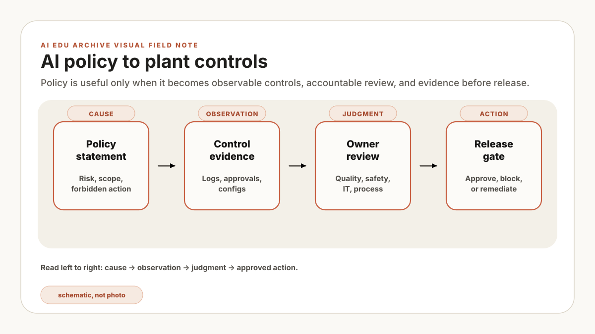

특정 회사의 실제 사건이 아닌 합성 사례입니다. 회의실 화면에는 “AI 사용 시 human oversight를 보장한다”는 정책 문장이 한 줄로 표시돼 있습니다. 플랫폼 담당자는 승인 버튼을 가리키고, 보안 담당자는 audit log를 말하지만, 승인자가 자리를 비웠을 때 누가 중지하는지와 실패 증거를 어디서 볼지는 적혀 있지 않습니다.
회의 참석자들이 같은 문장에 동의해도 떠올린 통제는 서로 다를 수 있습니다. “기밀 데이터를 보호한다”는 요구에서도 플랫폼 팀은 egress 차단을, 문서 owner는 열람 권한을, 보안 팀은 로그 보존을 먼저 봅니다. 담당자와 증거가 비어 있으면 배포 점검 때 정책을 다시 해석하게 됩니다.
여기서 필요한 기술 권고는 문장을 더 길게 쓰는 것이 아니라 risk, control, evidence, owner, review cadence로 나누는 것입니다. 매트릭스는 합의를 증명하지 않으며, 빈칸과 실패 test를 드러내 배포 여부를 판정할 재료를 만듭니다.
정책 문장 하나를 control, evidence, owner 세 칸으로 나누세요. 빈칸은 문구로 덮지 말고 미결 항목으로 남깁니다. Agent tool에는 승인자, 입력 source, 실행 결과, rollback 결과가 같은 trace로 연결돼야 합니다.
정책 문서에서 "human oversight"를 찾았는데 승인 주체와 중지 조건이 없다면 현장 통제로는 아직 부족합니다. 운영 팀에는 어떤 실패를 어느 control이 막는지, 누가 점검하며 무엇을 증거로 남기는지가 필요합니다. 시스템이 답변을 거부하거나 tool 실행을 멈춰야 할 조건도 같은 표에서 확인돼야 합니다.
"AI를 안전하게 사용한다"를 그대로 점검표에 옮길 수는 없습니다. 대신 허용 role, 조회 가능한 source, 승인이 필요한 action, 보존할 audit field, 실패 test를 적습니다. 각 항목에 pass/fail 판정이 있어야 release gate로 쓸 수 있습니다.
정책과 통제 사이의 간격
"기밀 데이터를 보호한다"는 요구는 network segmentation, role-based retrieval, document permission sync, redaction, incident response로 나뉩니다. Prompt logging은 조사에 유용하지만 민감정보를 다시 저장할 수 있으므로 마스킹과 보존 기간까지 정해야 합니다. "human oversight", "accuracy", "safety"도 실행 조건과 검증 증거가 없으면 통과 여부를 판정할 수 없습니다.
정책-통제 매트릭스는 높은 수준의 의도를 온프레미스 LLM, RAG, agent 플랫폼의 검사 항목에 연결합니다. 모든 위험을 한 번에 담기보다 실제 사용 사례와 데이터 등급을 기준으로 행을 추가하고, owner가 증거를 검토할 주기를 정하는 방식이 관리하기 쉽습니다.
Recipe 변경 통제는 수정 권한, 승인자, 비교 항목, released version 확인, 변경 log로 판정합니다. AI도 prompt의 금지 문구만 보지 않고 permission-filtered retrieval, egress 정책, audit trail이 실제 요청을 차단했는지 시험해야 합니다. 다만 audit log가 있다는 사실만으로 권한 설정이 올바르다고 증명되지는 않습니다.
매트릭스
먼저 현재 사용 사례에서 확인할 failure mode를 고릅니다. 아래 표는 데이터 유출, 오래된 지시, 근거 없는 claim, 권한 없는 tool action, 재현 불가능한 답변을 control, evidence, owner로 연결한 시작 템플릿입니다. 조직의 데이터 분류, 규제, OT 경계, 기존 변경관리 절차에 맞춰 행과 owner를 조정해야 합니다.
| Risk | Control | Evidence | Owner |
|---|---|---|---|
| 데이터가 외부로 나감 | Air-gapped runtime, egress 차단, local model weights, local embedding store. | Firewall rule export, dependency allowlist, network audit, build manifest. | IT / Security |
| 잘못되거나 오래된 문서 사용 | Source versioning, current-document flag, stale-source filter, freshness tests. | Index build report, superseded-source test, document retirement log. | Document owner |
| 답변에 근거가 없음 | Citation requirement, answer abstention rule, evaluation harness, expert review sample. | Eval report, failed-case log, citation coverage score. | AI platform owner |
| agent가 위험한 action 수행 | Tool allowlist, read/write separation, state-changing action에 human approval. | Tool registry, approval logs, dry-run records. | Process owner |
| 답변 재현 불가 | Trace ID, prompt version, model version, retrieved source IDs, user role snapshot. | Audit log and replay record. | Platform / QA |
agent가 위험도를 올리는 지점
RAG assistant의 출력은 답변에서 끝나는 경우가 많지만 agent는 ticket을 읽고 tool을 호출해 workflow 상태를 바꿀 수 있습니다. 따라서 평가 범위도 답변 정확도에서 허용된 action, 승인 상태, 실행 결과, rollback 가능성으로 넓어집니다.
Read-only와 state-changing tool을 별도 lane으로 관리합니다. 문서 검색, log 요약, revision 비교, equipment history 조회도 개인정보와 생산정보 권한을 그대로 따라야 하므로 무조건 넓게 열 수는 없습니다. State-changing tool은 draft 생성, 승인 요청, human confirmation이 있는 ticket 작성부터 시작합니다. Setpoint 변경, hold release, recipe 수정, corrective action 종료는 첫 release의 허용 목록에서 제외하고, 별도 위험평가와 검증 뒤에 판단합니다.
첫 agent가 alarm history를 읽고 maintenance ticket 초안을 만든다면 사람은 source와 대상 owner를 확인한 뒤 승인할 수 있습니다. 반대로 승인 없이 ticket을 닫거나 dispatch owner를 바꾸면 잘못된 판단이 즉시 운영 상태가 됩니다. 초기 범위는 "draft and ask"로 두고, 승인 누락·중복 호출·timeout 뒤 재시도·rollback 실패를 test case에 넣습니다.
{
"tool": "create_maintenance_ticket",
"mode": "state_changing",
"allowed_roles": ["process_engineer", "maintenance_lead"],
"requires_human_approval": true,
"dry_run_required": true,
"blocked_fields": ["recipe_id", "setpoint", "release_hold"],
"audit_fields": ["user", "role", "prompt_version", "source_ids", "approval_id"]
}이 JSON은 human-in-the-loop 정책을 설명하기 위한 참조 예시이며 그대로 운영 설정으로 사용할 수 없습니다. 운영 전에는 사용자와 서비스 인증, 전송 구간 TLS, timeout과 retry 경계, idempotency key, 변조 방지 audit, 승인 취소와 rollback을 실제 연동 시스템에서 검증해야 합니다.
거버넌스를 일상화하기
검토 주기는 기존 운영 회의에 붙이는 편이 지속하기 쉽습니다. 예를 들어 주간 quality review에서는 실패 답변과 미응답을, 월간 access review에서는 role과 tool 권한을 확인합니다. Index 변경에는 release note를 남기고, 잘못된 답변이 gate를 통과하면 incident review를 엽니다. Tabletop exercise에서는 승인자 부재, audit 누락, rollback 실패까지 실행해 봅니다.
관리되는 매트릭스에서는 질문마다 증거 위치가 정해집니다. 오래된 SOP 차단은 index build report에서, 외부 전송 차단은 network audit에서, 승인 필요 action은 tool policy와 approval log에서 확인합니다. 증거가 오래됐거나 owner가 검토하지 않았다면 해당 control은 미확인 상태로 표시해야 합니다.
작은 실습: 한 행만 완성하기
현재 검토 중인 사용 사례에서 “권한 없는 tool action” 한 행을 고르세요. 차단할 role, dry-run 결과, 승인 ID, idempotency key, rollback 확인자를 적고, 승인자가 없거나 audit field 하나가 누락되면 release 실패로 표시합니다. Tabletop에서 중복 호출과 timeout 재시도를 재현하지 못한다면 이 행은 완료가 아닙니다. 이 매트릭스는 조직 정책을 대신하지 않고, 통제의 존재가 실제 효과까지 보장하지도 않습니다.
통제 행을 만들었다면 다음 글에서는 그 행이 사고 순간에도 작동하는지 시험합니다. AI agent 사고 대응 runbook으로 이어가 승인 누락, 중복 실행, rollback 실패를 tabletop 절차로 바꿔 보세요.